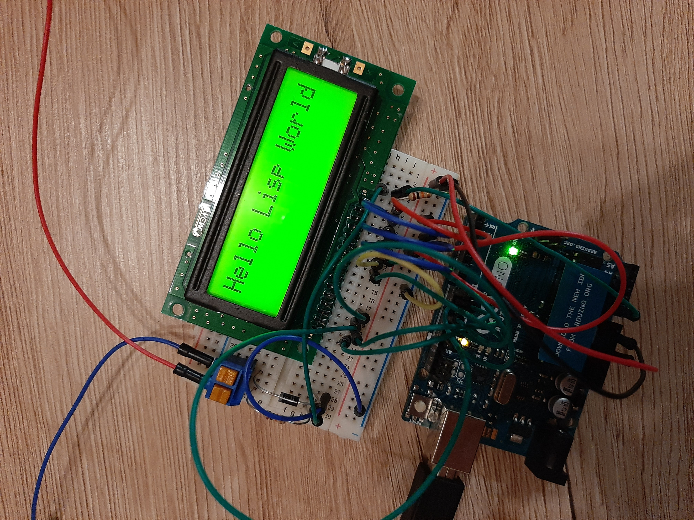

Lisp Project of the Day
cserial-port
You can support this project by donating at:


cserial-port
This library allows you to work with the serial port. It uses cffi to make system calls and should work on Linux, OSX and Windows.
To test it, I wrote this small program for my Arduino UNO:
#include <LiquidCrystal.h>
LiquidCrystal lcd(13, 12, 11, 10, 9, 8);
void setup() {
lcd.begin(16, 2);
Serial.begin(9600);
}
String msg;
int char_pos = 0;
int row = 0;
void loop () {
if (Serial.available()) {
char ch = Serial.read();
if (ch == '\n') {
char_pos = 0;
} else {
if (char_pos == 0) {
lcd.setCursor(0, 1);
lcd.print(" ");
}
lcd.setCursor(char_pos, row);
lcd.print(ch);
char_pos++;
}
}
}Now, let's send some data to our microcomputer to show the string on the attached LCD:
CL-USER> (cserial-port:with-serial (port "/dev/cu.usbmodem14101")
(cserial-port:write-serial-string
"Hello Lisp World!"
port))And here is the result!

Brought to you by 40Ants under